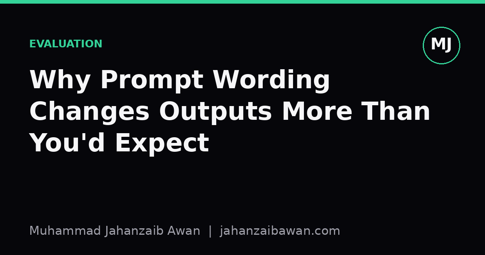

Why Prompt Wording Changes Outputs More Than You'd Expect
A single reworded instruction can shift accuracy by double digits. Here is why that happens and how to test prompts properly instead of trusting a vibe.

The surprise that shouldn't be a surprise
Most people's first encounter with prompt sensitivity goes something like this. They ask a model a question, get a mediocre answer, rephrase the question slightly, and suddenly get something much better. Or worse. The instinctive reaction is to treat this as a quirk, a bit of randomness to be ignored. I think that reaction is wrong, and it is worth being precise about why.
A language model does not have a single stable function it is computing for a task. It has learned a vast, tangled set of associations between phrasings and continuations during training, and at inference time it is essentially doing a very high dimensional lookup against that learned surface. Two prompts that a human reader would judge as semantically identical, say asking a model to 'summarise this in one sentence' versus 'give me the key point in a single sentence', can land in different regions of that surface. They are close in meaning but not close in the token patterns the model has strongly associated with good behaviour, because the training data that shaped those associations was not evenly distributed across phrasings.
This is not a defect unique to one model family. It is a structural consequence of how these systems are trained, on enormous but uneven text distributions, with instruction tuning that covers some phrasing conventions far more densely than others. A prompt that happens to resemble a common pattern from instruction tuning data, such as numbered steps, explicit role framing, or a particular imperative verb, can trigger much more reliable behaviour than a paraphrase that a human would consider equally clear.
A worked example of how much this matters
Suppose you are building a system that extracts a shipping date from customer emails and you want it returned in a fixed format. You try three prompts on the same set of fifty emails. Prompt A says 'Extract the shipping date from this email.' Prompt B says 'What is the shipping date mentioned in this email? Reply with only the date in YYYY-MM-DD format.' Prompt C says 'You are a logistics assistant. Read the email and output the shipping date as YYYY-MM-DD. If no date is present, output NONE.'
In a plausible run of this kind of test, Prompt A might get the date roughly right in thirty five of fifty emails but return it in five different formats, making downstream parsing unreliable. Prompt B might hit forty two correct, correctly formatted extractions. Prompt C, by adding a role and an explicit fallback instruction, might reach forty six, mostly because it stops the model inventing a date when none exists, which was the dominant failure mode in A and B. That is a swing of over twenty percentage points in effective accuracy from wording alone, with no change to the underlying model or the data.
The important lesson is not that Prompt C is objectively the best prompt in some universal sense. It is that the gap between A and C is large enough to change whether the system is usable in production, and that gap was invisible until someone actually ran the comparison on a fixed set of examples and counted the outcomes. Anecdotal impressions from trying five or six examples by hand would almost certainly have missed the NONE-case failure mode entirely, because it only shows up reliably across a larger sample.
Why intuition fails here and what to do instead
The reason intuition fails is that humans judge prompt quality by whether the instruction is clear to them, not by whether it is clear to the model's learned distribution of instruction-response pairs. Clarity to a human reader and reliability of model behaviour are correlated but far from identical, and the gap between them is exactly where silent failures live. Treating a single successful trial as evidence that a prompt works is the same mistake as trusting a model's performance on one lucky train-test split: it tells you almost nothing about the variance you would see on a different sample.
The fix is to treat prompt selection as an empirical evaluation problem rather than a wordsmithing exercise. That means building a held-out set of representative inputs, ideally one that was not used while you were iterating on the wording, because iterating on a fixed small set and then reporting performance on that same set is a mild form of leakage: you are optimising the prompt to the quirks of those specific examples. A clean setup uses one set for prompt development and a separate, untouched set for the final comparison, exactly as you would with model training and test data.
On top of that, run each candidate prompt across the same inputs multiple times if the model has any sampling temperature above zero, because a single pass conflates wording effects with sampling noise. Report a distribution, not a point estimate: mean accuracy with a measure of spread, or at minimum the range across repeated runs, so a reader can see whether a six point gap between two prompts is a real effect or noise. It is also worth testing prompts against a few paraphrases of themselves, not just against competing designs, since a prompt that is fragile to synonym substitution is a liability even if it currently scores well.
Finally, keep a simple log of prompt versions alongside their measured scores and the exact evaluation set used, the same discipline you would apply to model checkpoints. Prompts are not cosmetic strings bolted onto a fixed system; they are a parameter of the system with measurable effect on output quality, and they deserve the same version control and held-out evaluation that any other parameter would get. Once you start treating prompt choice this way, the earlier surprise about wording changing outputs so much stops being surprising and becomes just another number you track.